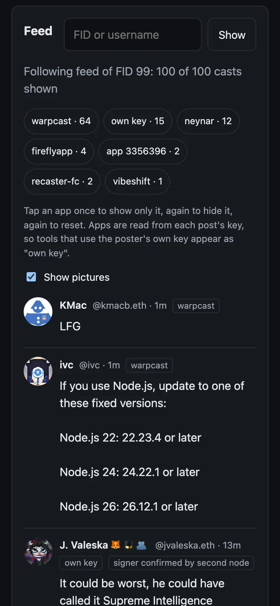
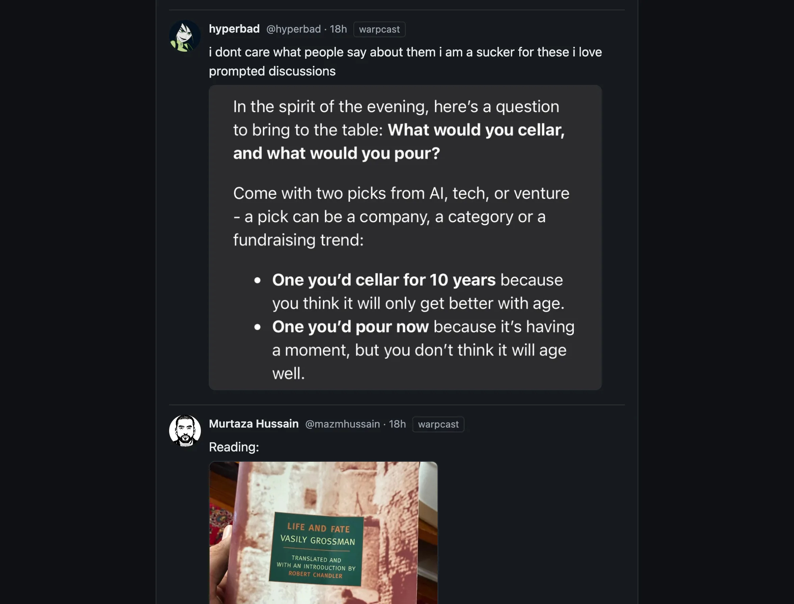

What Outpost is
Farcaster is a social network whose posts, likes and follows are public data. That data is kept by Snapchain, a network of computers called nodes. A small, fixed set of them, the validators, agree on the order of new messages. Anyone can run a read node: it keeps a full copy of the data and answers questions about it.
Outpost sets up a read node on a server you rent, and runs a client on your computer that reads from that node and posts through it. Besides the server, you need no API key and no paid service.
What it costs
$0.41/h, then $0.23/h
On DigitalOcean at October 2026 list prices: about $0.41 an hour during the first sync, $0.25 for the server (8 vCPU, 32 GB RAM) and about $0.16 for its 1.2 TB disk. Once synced, ./outpost shrink moves the node to a server with 8 GB RAM at $0.06 an hour, so it costs about $0.23 an hour, or $5.50 a day. Billed by the hour until you run ./outpost destroy. Hetzner is also supported; check its prices before you start.
How long it takes
6 to 8 hours
For the first sync. On our test server: 1 hour 43 minutes to load a snapshot of the network, then 4 hours 11 minutes to catch up on the blocks since. Our first outside tester's run took 7 hours 33 minutes. The client works once loading is done. The newest casts appear as the node catches up.
Your copy of the network
557 GB
The whole network's data, on your server, on 18 October 2026.
API keys needed
None
No API key, no Ethereum RPC and no paid service besides the server.
What you end up with
- A read node on your server holding the whole network's data.
- A web client at
http://127.0.0.1:8381that shows your following feed and can cast, reply, like, recast and follow. - An app key that can cast, react and follow, and nothing else.




Who it is for
Farcaster users who are at ease in a terminal, and developers who want to see the protocol from the node up. You will rent a server and run a few commands. A community can share one node: its members use it from a browser and pay nothing (step 8).
How the pieces fit
Your computer
Your browser opens 127.0.0.1:8381.
The Outpost client runs here. It holds your app key and signs what you post.
Your server
A Snapchain read node with a full copy of the network's data on a 1.2 TB disk.
Its API is closed to the internet. The client reaches it through the tunnel.
The rest of Farcaster
Other nodes, and the validators that put messages into blocks.
Account and key events from the Optimism chain arrive inside those blocks.
- Reading. The client asks your node, which already holds the network's data.
- Posting. The client signs the message with your app key and sends it through the tunnel to your node. The node checks it and passes it to the validators over gossip. Outpost then reads the message back from your node before it says "confirmed".
- Open ports. Two, on the server: 22 for SSH and 3382/udp for gossip.
What is different about it
- Your own node. Your feed is read from a node you run, and your posts go out through it.
- A narrow app key. The key the client holds can cast, react and follow. It cannot change your profile or your verified addresses, and it expires 30 days after its last use.
- Revoking needs no recovery phrase. The key signs its own removal, from the client or with
./outpost uninstall. - A feed in time order, labelled by app. Your following feed is the latest casts of everyone you follow, merged by time. Each cast shows the app that posted it, and you can show only one app or hide it.
- Every message is checked. Before showing a message, the client checks its hash and signature, and that the key that signed it belongs to the author. What it shows is rebuilt from the signed bytes, so a node cannot alter a message or slip anything into it unnoticed.
- One node for a whole society. Members of a society can share one node. Each gets their own access token and rate limit, and their app keys stay in their own browsers.
- Societies as signed files. A charter lists a society's members, which apps and channels count, and its code of conduct. Load one to read the society's feed. Leaving is one tap, and a census of its activity is computed on your node.
- Societies that change by vote. Members add or remove members by liking a proposal, in any Farcaster app. It passes when more than half of them have liked it, and anyone can recount it from their own node (step 7).
Known gaps
What Outpost does not do well yet, from our own runs and our first outside tester's.
- Many steps if you are not a developer. You need a cloud account with its command-line tool, a terminal and Node.js, and the first sync takes 6 to 8 hours. Our first outside tester found it too many steps for someone who is not a developer. An AI assistant can run the commands for you, but you still sign up for the cloud account yourself. One person can also run a node for a whole community, whose members only need a browser (step 8).
- The SSH tunnel can drop. A Wi-Fi change or a laptop going to sleep cuts the client's tunnel to your node, and the page shows a connection error until it is back. Our first tester lost it twice, so the client now checks the tunnel every 15 seconds and reopens it.
- New DigitalOcean accounts may be refused the 1.2 TB disk. This happened to our first tester. Use Hetzner (not yet tested on a real server, see step 1), a server you already have, or ask DigitalOcean support to raise the limit.
- Accounts made in the Farcaster app cannot post yet. The app keeps their custody key. Its own "approve a connected app" flow would add a key with full access and no expiry that Outpost could not revoke; supporting it, clearly labelled, is next. Reading needs no account. To post today, use an account whose custody key is in your own wallet, or create one on a society node (below).
- No account? A society can pay for one. With
./outpost sponsor on, a society node's members create a Farcaster account in the client in about a minute: their browser makes the key and the society pays the $0.20 fee, so they need no ETH, invite code or X account. Without a sponsor, Outpost creates no accounts. - Not built yet: direct messages, channel pages, notifications, image upload and mentions. Direct messages and channel membership are not part of the protocol: they live on the Farcaster app's servers, which a client that reads only from your node does not use. A charter can limit a feed to channels.
- Society votes have not run on mainnet yet. They are tested against a local test node and in a real browser, not yet with real accounts. Votes are public, and members who stay silent count as "no".
- The server costs money while it exists. About $10 a day on DigitalOcean, whether or not you use the client. For a server Outpost rented,
./outpost destroystops the bill, and--watchdogdeletes it for you while the watchdog runs on your computer. A server you brought yourself you stop or delete at its provider.
Quickstart
You need:
- A DigitalOcean or Hetzner account with its command-line tool logged in (
doctlorhcloud), or any Ubuntu 24.04 server with root SSH and at least 1 TB of disk. - Node.js 20 or newer.
- macOS or Linux. On Windows, use WSL; we have not tested it there.
- To post: a Farcaster account whose custody key is in your wallet, or a test account that already has storage (read the warning below first). No account? On a society node with a sponsor, the client creates one for you. Without any account you can still read: the client shows the feed of any FID or username.
First time with DigitalOcean or Hetzner? Set up the command-line tool
DigitalOcean. Make an account at digitalocean.com and add a payment method. Install doctl (install guide; on a Mac, brew install doctl). In the control panel, open API, choose Generate New Token, give it Full Access and a 30-day expiry (the watchdog and ./outpost destroy still need it later; if it has expired, make a new one and run doctl auth init again). Then log in with it:
doctl auth init # check: prints your account e-mail and droplet limit doctl account get
New DigitalOcean accounts may be refused the 1.2 TB volume ("invalid size specified"). Then ask their support to raise your volume limit, or use Hetzner or a server you already have.
Hetzner. Make an account at hetzner.com/cloud and create a project. Install hcloud (install guide; on a Mac, brew install hcloud). In the project, open Security, then API tokens, and generate a token with Read & Write access. Then log in with it:
hcloud context create outpost # check: lists your servers (an empty list is fine) hcloud server list
Both commands ask you to paste the token. Keep it out of chats, casts and AI assistants, and delete it in the control panel when you are done.
git clone https://github.com/Spider333/outpost cd outpost # rent a server with a 1.2 TB disk (1 TB on Hetzner), billed by the hour ./outpost provision # start a read node; the first sync takes 6 to 8 hours ./outpost node # then open http://127.0.0.1:8381 ./outpost client
Once ./outpost status says synced, cut the bill: the node no longer needs the big server.
# move to a server with 8 GB RAM; a few minutes offline ./outpost shrink
When you are done:
# revoke the CLI's app key; a key added in the web client: "Revoke this key" there ./outpost uninstall # delete the server and stop paying ./outpost destroy
Every command is safe to run twice. --dry-run on provision, shrink and destroy prints the exact provider commands without running them.
Just trying it? ./outpost provision --watchdog 24 deletes the server for you after 24 hours, or after 2 hours with no progress, so a forgotten server cannot keep billing you. It runs on your computer; ./outpost watchdog stop keeps the server.
With an AI coding assistant
Paste this into an assistant that can run commands on your computer, such as Claude Code, Codex or Cursor:
Help me run Outpost (https://github.com/Spider333/outpost). Read its README and AGENTS.md first. Then take me through provision, node and client one step at a time: before each command, say what it does and what it costs, and wait for my OK. I will type any cloud token or recovery phrase myself in my own terminal, never in this chat. Leave doctl auth init (or hcloud context create) and ./outpost cli login to me: they ask for secrets in a hidden prompt that only works in a real terminal. You cannot answer the yes/no prompts of provision and destroy, so once I say OK, run them with --yes.
The assistant runs the same commands as above, so the same costs apply. Keep tokens and recovery phrases out of the chat: the assistant's provider would see them. If a recovery phrase lands in the chat by mistake, treat that account as exposed and stop using it.
Something went wrong? What our first outside tester hit, and what to do
422 failed to create volume: invalid size specifiedfrom./outpost provision: your DigitalOcean account is limited to smaller volumes, which is common on new accounts. Nothing billable was created. Ask their support to raise the volume limit, use--provider hetzner, or use a server you already have:OUTPOST_HOST=<ip> ./outpost node.cancelled, or "no terminal to answer": the command ran without a terminal, which is common under an AI assistant. Run it again with--yes../outpost statussays "cannot reach the server over SSH" during the sync: usually a short network drop. The node keeps going on the server; check again in a minute.- The client page shows a connection error, or a cast does not send: the client lost its connection to your node (a Wi-Fi change or sleep). It reconnects by itself within about 15 seconds; then try again. If it does not, stop it with Ctrl-C and run
./outpost clientagain. ./outpost uninstallsays there is nothing to revoke: you connected in the web client, so the key lives in that browser. Open the client and use "Revoke this key (uninstall)" under "Your app key".- A cast you want gone: the web client cannot delete casts. Run
./outpost cli login, then./outpost cli delete <hash>, then./outpost cli uninstall.
Before you paste a recovery phrase
A recovery phrase is the custody key of an account. Whoever has it can transfer the account, add or remove every app key, and change the username. Pasting it into the wrong program is like running rm -rf / as root: there is no undo.
- Use a test account. Never your main account.
- Only paste a phrase into software whose code you have read, or whose author you trust. That includes this one.
- Prefer the wallet button. With it, the phrase never leaves your wallet.
- Revoke the app key when you are done:
./outpost uninstall, or "Revoke this key" in the client.
What Outpost does with a phrase: it derives the custody address in memory, signs one authorization for an app key that can only cast, react and follow and that expires 30 days after last use, then drops it. It never writes the phrase to disk and never sends it over the network. You can check this in src/core/account.ts and src/cli/main.ts.
Tutorial
Nine steps, from renting a server to deleting it. Every output is copied from a real run; when a run was not on a fresh node, the step says so. Green Concept boxes explain each idea where it first matters, and every term is also listed under Terms.
- 1Rent a server
- 2Start a read node
- 3Connect an account
- 4Read and post
- 5Filter by app
- 6What a keyless node cannot do
- 7Societies: a charter file
- 8Share your node
- 9Clean up
1Rent a server
A node keeps a full copy of the network's data. On 18 October 2026 that was 557 GB once loaded, from a snapshot of about 400 GB compressed. Outpost streams the snapshot straight into the database, so it never needs room for both at once, and asks for a 1.2 TB volume to leave room to grow (--disk to change it).
On Hetzner it asks for 1 TB, because new Hetzner accounts can hold at most 1024 GB of volumes. Hetzner is not tested on a real server yet: our real runs used DigitalOcean, and the Hetzner commands have only run against a simulated Hetzner in our tests. We expect a full node to fit in 1 TB but have not measured it there.
The server starts small: 2 vCPU and 8 GB RAM. Loading the snapshot needs 32 GB (there are reports of nodes with 16 GB crashing), so step 2 sizes the server up first, and once the node is synced ./outpost shrink takes it back down. A synced node used about 3 GB of RAM on our server. Both steps have run on a real DigitalOcean server: after ./outpost shrink the synced node ran 4 hours on 8 GB, peaking at 1.4 GB used. On Hetzner they have only run against a simulated server in our tests.
./outpost provision --provider do # or: ./outpost provision --provider hetzner
Here is what it runs, shown with --dry-run (long lines and your home path shortened):
The first four lines give the sizes and the price. Each line starting with + is one command sent to DigitalOcean.
DigitalOcean: droplet outpost-node in fra1 with a 1200 GB volume. It starts small (s-2vcpu-8gb-amd); ./outpost node sizes it up to s-8vcpu-32gb-amd for the first sync, and ./outpost shrink takes it back down. Billed by the hour while it exists: the volume about $0.16/h, plus the droplet (s-2vcpu-8gb-amd is $0.06/h, s-8vcpu-32gb-amd $0.25/h). October 2026 list prices; check yours. + doctl compute ssh-key import outpost-node-key --public-key-file /home/you/.ssh/id_ed25519.pub + doctl compute volume create outpost-node-data --region fra1 --size 1200GiB --fs-type ext4 --desc outpost\ snapchain\ data + doctl compute tag create outpost-node + doctl compute firewall create --name outpost-node-fw --tag-names outpost-node --inbound-rules protocol:tcp\,ports:22\,... protocol:udp\,ports:3382\,... + doctl compute droplet create outpost-node --region fra1 --size s-2vcpu-8gb-amd --image ubuntu-24-04-x64 --ssh-keys 76:f4:...:1d --user-data-file /tmp/tmp.gdpv5XZPkm --volumes \<volume-id\> --tag-name outpost-node --wait
The firewall opens two ports: 22 for SSH and 3382/udp for gossip, which is how your node talks to the rest of the network. The node's API ports stay closed. Your client reaches them through an SSH tunnel. This matters: by default, a node with an open API port lets anyone on the internet send messages through it.
Already have a server? Skip this step and run OUTPOST_HOST=<ip> ./outpost node. It needs Ubuntu 24.04, root SSH and the disk above.
2Start a read node
Read nodes and validators. Snapchain has two roles, run by the same program. Validators propose and vote on blocks; there is a fixed set of them. A read node, which is what you are about to start, follows the chain, keeps the full state and answers queries. It never votes. Anyone can run one, and it needs no key or paid service: account and key events from the Optimism chain arrive inside the blocks validators produce.
Read nodes also take writes. When your client sends a message, your node checks it, then passes it to validators over gossip. "Accepted" means accepted for relay, not yet in a block, so Outpost reads every message back from your node before it says "confirmed".
./outpost node
On a server from step 1, it first sizes the server up for loading the snapshot. From a real run on 21 October 2026 (tables shortened):
shutting down outpost-shrink-test to move it from s-2vcpu-8gb-amd to s-8vcpu-32gb-amd; it starts again by itself in a few minutes 3486212175 completed shutdown 2026-10-21 10:02:44 +0000 UTC 2026-10-21 10:02:48 +0000 UTC 3486212624 completed resize 2026-10-21 10:02:58 +0000 UTC 2026-10-21 10:03:12 +0000 UTC 3486213212 completed power_on 2026-10-21 10:03:16 +0000 UTC 2026-10-21 10:03:26 +0000 UTC waiting for the server to accept SSH and finish first boot... server ready: 201.79.0.30 setting up the read node on 201.79.0.30 [node-setup] data directory: /mnt/outpost_shrink_test_data (1131 GB free) [node-setup] fetching compose file for snapchain v0.14.3 [node-setup] loading the snapshot in the background: 8 downloads at a time, streamed into the database.
The line that matters: synced: every shard is within 0 blocks of the tip. Show the full output
setting up the read node on 142.93.168.228 [node-setup] data directory: /mnt/snap (1356 GB free) [node-setup] starting snapchain 0.14.3 (read node) Container snapchain-snapchain-1 Running Container snapchain-statsd-1 Running snapchain-snapchain-1 Up 9 hours snapchain-statsd-1 Up 24 hours (healthy) [node-setup] done. HTTP API on 127.0.0.1:3381 once the snapshot has loaded. The node downloads a snapshot of the network (about 560 GB), loads it, then catches up on the blocks since. On our test server loading took about 1 hour 45 minutes and catching up about 4 hours more. The client works once loading is done; the newest casts appear as it catches up. You can press Ctrl-C at any time; the node keeps going. Check later with ./outpost status. 03:50 synced: every shard is within 0 blocks of the tip next: ./outpost client
This is a second run on our already synced node, so it found the node running and returned at once. On a new server the last lines show download and loading progress until the node is synced.
This runs the official farcasterxyz/snapchain Docker image, pinned to version 0.14.3, with the official compose file. Outpost does not use the official installer script, because it reads from /dev/tty and so fails without a terminal, and because with no operator FID it exits before starting the node (issue #1030).
Our test server was a DigitalOcean one with 8 vCPU, 32 GB RAM and a 1.2 TB volume, on 18 to 19 October 2026: loading took 1 hour 43 minutes and catching up 4 hours 11 minutes. Our first outside tester, on 22 October 2026, went from start to synced in 7 hours 33 minutes. Snapchain's own loader took 6 hours 40 minutes to load on the same kind of server. Catching up takes longer the older the snapshot is. ./outpost status shows where it is:
node: loading snapshot: shard 1: 200 of 2672 chunks loaded, 20 GB on disk
Once it has caught up:
./outpost status
"Within 1 blocks of the tip" means your copy of every shard is at most one block behind the newest.
server: 142.93.168.228 (OUTPOST_HOST) node: synced: every shard is within 1 blocks of the tip
Our node was set up before ./outpost provision existed, so we pointed Outpost at it with OUTPOST_HOST. A server made by ./outpost provision shows its provider and name on the first line instead.
3Connect an account
./outpost client
your node is reachable through an SSH tunnel on 127.0.0.1:13394 (no port opened on the server) open http://127.0.0.1:8381 in your browser. Ctrl-C stops the client. client: http://127.0.0.1:8381 node: http://127.0.0.1:13394 (requests to /v1/* are forwarded there)
We ran it as OUTPOST_TUNNEL_PORT=13394 ./outpost client, because the default local port, 13381, was already in use on our machine. Yours will say 13381 unless you change it.
On a phone, run ./outpost client --phone instead. It serves the client from your server over HTTPS, using a free <ip>.sslip.io name so you need no domain, and puts a password in front of everything, including the node's API.
Not tested on a real server yet: --phone has only run in our tests, against a simulated cloud provider, so there is no real output to show here.
Open the address it prints. To post, open Post from Outpost and pick what fits you: My account's owner key is in a browser wallet, or I have a test account's recovery phrase. On a society node with a sponsor, I have no Farcaster account creates one. The command-line version is ./outpost cli login.
FID. Your account is a number, the Farcaster ID, registered on the Optimism chain. Usernames point to it; posts are signed for it.
Custody. One Ethereum address owns each FID: the custody address. Your recovery phrase is the private key for that address, at the standard path m/44'/60'/0'/0/0. Outpost derives the address, asks your node which FID belongs to it, and checks that the address is still that FID's custody before it signs anything. No Optimism RPC is needed for this; your node has the registry events.
Storage. The network only keeps messages for accounts that rent storage. One unit bought after July 2025 holds 100 casts, 200 reactions and 200 follows; when you go over, the oldest are pruned. Storage is bought onchain. Outpost does not buy it; it stops if the account has none.
App keys. You do not sign every post with the custody key. Instead the custody key authorizes an app key, an Ed25519 key the client holds. Since May 2026 this is a plain message to the network, KEY_ADD, with no Optimism transaction and no gas. Each key has:
- scopes: the message types it may sign. Outpost asks for casts, reactions and follows only, so it cannot change your profile or verified addresses;
- a TTL: it expires after 30 days without use (the maximum is 90);
- a requesting app: the FID of the app that asked for it, signed by that app's custody key. That is how anyone can tell which app posted a cast.
Two details trip people up. The signature uses its own EIP-712 domain, Farcaster KeyAdd with chain ID 1, not the onchain key gateway's domain, so the older helper functions produce signatures the network rejects. And the deadline is in Farcaster time, seconds since 1 January 2021, not Unix time.
The outputs in this step and the next are from mainnet, with our test account (FID 3355358), on 18 October 2026. The warning printed before the first question is left out here, and the home path is shortened.
./outpost cli login
Before it asks you to sign, Outpost shows the custody address, the FID that address owns, its storage units and what the key may do.
Is this a test account, and do you accept the above? [y/N] y Recovery phrase (input hidden): custody address 0x15020a39b36cF852CDBD1aC036DF1f45ea4ccafa FID 3355358 storage units 1 app key can cast, react and follow; expires 30 days after last use Sign the app key authorization for this FID? [y/N] y app key 0xe0bb564ae0787b31ade0ac66856fcfb745b0eb98846e6370235332ca837cebde is live. Saved to ~/.config/outpost/appkey.json. Your recovery phrase was not saved anywhere. Revoke this key any time with: ./outpost cli uninstall
./outpost cli whoami
FID 3355358, app key 0xe0bb564ae0787b31ade0ac66856fcfb745b0eb98846e6370235332ca837cebde scopes: cast_add, cast_remove, reaction_add, reaction_remove, link_add, link_remove expires: 2026-11-17T22:50:31.000Z unless used before then
Before any account is involved, you can check the signing code against your own node. This builds every message type Outpost uses with throwaway keys, asks the node to validate each one, and checks that two tampered messages are rejected. It sends nothing.
./outpost cli selftest
All 11 checks passed. Show the full output
PASS KEY_ADD (gasless, scoped, 30-day TTL): node says valid=true, expected true PASS CAST_ADD: node says valid=true, expected true PASS CAST_REMOVE: node says valid=true, expected true PASS LINK_ADD follow: node says valid=true, expected true PASS LINK_REMOVE follow: node says valid=true, expected true PASS REACTION_ADD like: node says valid=true, expected true PASS REACTION_ADD recast: node says valid=true, expected true PASS REACTION_REMOVE like: node says valid=true, expected true PASS KEY_REMOVE (self-revoke): node says valid=true, expected true PASS CAST_ADD with text changed after signing: node says valid=false, expected false PASS KEY_ADD with TTL widened after signing: node says valid=false, expected false all 11 checks passed against http://127.0.0.1:13392
This run was against our mainnet node, through the tunnel on port 13392. The node's validator checks signatures and message rules, not account state, so it cannot tell you whether a custody signature matches a real account. The unit tests (npm test) cover that with known test vectors.
4Read and post
Snapchain has no home timeline endpoint. A following feed is the list of accounts you follow (/v1/linksByFid), the latest casts of each (/v1/castsByFid), merged by time. That is one request per account you follow, which is fine on your own node.
./outpost cli feed --fid 99 --limit 3
Each cast takes three lines: time, author and the app that posted it; the text; the author's FID and the cast's hash. The last lines count casts per app.
2026-10-18 22:46 @catra.eth via warpcast (app fid 9152)
@higherathletics proof [1 embed]
9318:0xbe6ca325398da8036c64f40605447a4b965f4231
2026-10-18 22:43 @trish via own key
My cat just dragged 32 oz of perfectly cooked medium rare flank steak off a hot pan and into the bathroom. Any suggestions for dinner? 162g of protein gone 😭
4877:0x00eb1eece902ca6cf186c0aedb4bce2dc5c829d6
2026-10-18 22:39 @pichi via warpcast (app fid 9152)
As always, @kenjiquest crushed this one as well. I will never tire of this use of AI as a creative outlet.
234616:0xf873c07770c4758afd0e0ec9da5a7c876c602586
3 casts in 4.51 s from http://127.0.0.1:13392
2 via warpcast (app fid 9152)
1 via own key
This is the following feed of FID 99, read from our mainnet node on 18 October 2026. Any account's following feed is public, so you can read one without logging in.
./outpost cli cast "Outpost test cast 1: testing a self-hosted client" ./outpost cli follow 1 ./outpost cli like 3355358 0x0fe046f163063a3200260f1fbec8338d871d2ef0 ./outpost cli recast 3355358 0x0fe046f163063a3200260f1fbec8338d871d2ef0
cast: 0x0fe046f163063a3200260f1fbec8338d871d2ef0 (confirmed: your node returns it) follow: 0x43e3c752147f247248d92577bdba8272ac2be313 (confirmed: your node returns it) like: 0x7a0cf348a93aa9c6e56955e3d7f776830c80b0d0 (confirmed: your node returns it) recast: 0x06fcb40fa0fbd70a3caa344afd4704b7bd5a046f (confirmed: your node returns it)
Each line is a message hash. "Confirmed" means Outpost read that exact message back from your node. We liked and recast our own test cast, and undid all three afterwards with unlike, unrecast and unfollow.
Messages. Every action is a message: a small protobuf with your FID, a timestamp, the action, a BLAKE3 hash of those bytes and an Ed25519 signature from the app key. A cast, a follow, a like and a recast are four message types. Nodes check the signature and that the key is allowed to sign that type, then store the message. Deleting a cast is another message that removes it.
5Filter by app
A cast does not say which app posted it. But it is signed by an app key, and every app key records the FID of the app that requested it. Outpost looks this up on your node for every author (/v1/signersByFid) and labels each cast. In the client, tap an app to show only its casts, again to hide them, again to reset. In the command line:
./outpost cli feed --fid 2 --limit 2 --exclude 9152
With app 9152 (warpcast) hidden, the feed shows casts from other apps and from people's own keys.
2026-10-18 22:06 @baseddesigner.eth via puffinapp (app fid 3355363)
testing
196957:0x1fcb5aedc4a0a8ea2372b7f8a6e021400f67b29f
2026-10-18 21:16 @b05 via own key
Amazon Discounts New Mac Mini by Up to $149, Mac Studio by $200 https://www.macrumors.com/2026/10/18/new-mac-mini-149/ via /feedme app by @b05
196142:0x018d27bf1bff4e8e8cf6386b6c7e64cfd4c1bc59
2 casts in 4.04 s from http://127.0.0.1:13392
1 via puffinapp (app fid 3355363)
1 via own key
./outpost cli feed --fid 37 --limit 2 --include 16823
Only casts from app 16823 (fireflyapp) are left.
2026-10-17 05:50 @vitalik.eth via fireflyapp (app fid 16823)
Fun fact of the day: Bitcoin mining cost is split about 50/50 between compute capex and electricity. Meanwhile, AI inference is almost completely dominated by compute capex. [2 embed]
5650:0x9252885364ac7db01ac427e97dd246b7af619949
2026-10-15 03:39 @vitalik.eth via fireflyapp (app fid 16823)
Big congratulations to the @zksync airbender team for this milestone. At this point, I consider the battle for speed to be definitively won, and the top priority for zkEVMs should shift fully to secur [1 embed]
5650:0x2939942b565704c087d33fd818fac745551776e6
2 casts in 0.58 s from http://127.0.0.1:13392
2 via fireflyapp (app fid 16823)
What this can and cannot tell you:
- A key a user signed for themselves carries their own FID as the app. Tools that do this, including Outpost by default, all look the same: "own key".
- A service that signs for many apps under one FID shows up as one app.
- An app key copied into another program cannot be told apart.
- The requesting app cannot be faked: the network checks the app's custody signature. But one developer can register several FIDs.
6What a keyless node cannot do
Your node runs without an Ethereum RPC endpoint. That is what makes it keyless, and it costs three things. It rejects, and so you cannot submit through it:
.ethusernames and other ENS names,- ENS username proofs,
- address verifications for smart-contract wallets.
Casts, reactions, follows, profile fields, plain usernames, normal wallet verifications and app keys all work. To get the three back, add l1_rpc_url with any Ethereum mainnet RPC to the node's config.
7Societies: a charter file
Filtering by app is one rule. A society is a set of them, written down and signed: who the members are, which apps' posts count, which channels and keywords, and a link to the society's code of conduct. Outpost calls this a charter. It is one JSON file.
The repository has an example built from public data: the 24 accounts that posted most in the /network-states channel in the last 90 days. It is unofficial and names no issuer, because nobody from that channel signed it.
./outpost cli charter verify examples/network-states.charter.json
OK: "network-states channel (example)", 24 members, signed by 0x71bFF431251Afc3E941f6f606B9016Ff3660D6F4. It names no issuer FID, so only the address vouches for it
The signature covers every field. Change one member and the file is rejected:
jq '.members += [3]' examples/network-states.charter.json > tampered.charter.json ./outpost cli charter verify tampered.charter.json
REJECTED: the file was changed after it was signed (signature does not match its content)
If the charter names an issuer FID, Outpost also checks on your node that the signer is that account's custody address. Nobody else can sign for the society.
In the client, load a charter in the Society panel. The feed then shows the society's members and channels, through its rules. Join follows its members with your app key. Leave drops the lens. Your keys, follows and posts do not change, because they were never the society's to begin with. Leaving is one tap.
The census counts members, members who posted in the last 7 days, casts per day, and the apps members post from. It reads only your own node, so anyone with a node and the same file gets the same numbers.
./outpost cli charter census examples/network-states.charter.json
"network-states channel (example)"
census 2026-10-11 to 2026-10-18 (7 days), from your node
members 24
active (posted) 23
casts 1071 (153 per day)
apps members posted from:
1023 warpcast (app fid 9152)
32 own key
16 fireflyapp (app fid 16823)
computed in 0.5 s
To check it, scripts/manual-census.sh counts the same thing with only curl and jq, none of Outpost's code. Run a few seconds later, it agreed:
scripts/manual-census.sh examples/network-states.charter.json 7
members 24 active 23 casts 1071 casts_per_day 153.0
A charter is a lens, not a wall. It changes what you see and whom you follow. It cannot stop anyone posting, and it hides nothing from anyone else.
Members change the charter by vote. A member posts a proposal, such as adding someone, and the others approve it by liking it, in any Farcaster app. It passes when more than half of the members have liked it; leaving needs only your own like. There are no deadlines, because Farcaster timestamps are set by the author and could be backdated. Each passed change is kept in the charter file with the signed likes, so anyone can recount it from their own node:
./outpost cli charter propose society.log.json --add dwr ./outpost cli charter proposals society.log.json ./outpost cli charter verify society.log.json
In the client, the Society panel shows open proposals, how many members approved each, and buttons to approve, propose, and recount. This has not run on mainnet yet (see Known gaps).
8Share your node
A node costs money for every hour it runs, so it makes sense for a society to share one. In society mode your server stops being only yours: members of your society use it from their own browsers, with their own accounts, for free.
That means members trust you a little. Outpost keeps that trust small, in code anyone can read. Your server serves no page and no script, so you cannot change the client a member runs. Their app keys stay in their browsers, so you cannot post as them. Their client checks every message it reads, so you cannot alter or invent what they see. What you can still do, such as see what they read, is listed in TRUST.md.
./outpost society on
open (or close) 443/tcp in your server's firewall yourself; Outpost did not create this server. [society] serving the node API at https://142-93-168-228.sslip.io to members only (no web page) society node: https://142-93-168-228.sslip.io (the node API for members; no web page) add a member: ./outpost members add <name> the first request can take a minute while the certificate is issued. turn it off with: ./outpost society off
Shortened: the lines that download the gate's container image are cut. Our node was set up before ./outpost provision existed, so we ran this with OUTPOST_HOST and opened 443/tcp in its firewall ourselves.
A gate now sits in front of the node. It lets a request through only with a member's token, only for reads and for posting, and only as fast as that member's rate limit allows. Add a member:
./outpost members add test1
invite link for test1 (shown once; send it privately, whoever has it can use the node as test1): it works once society mode is on (./outpost society on). Remove with: ./outpost members remove test1
Shortened: the line with the link is cut, because it holds test1's token.
The link opens the client from GitHub Pages, built from this repository by a public workflow, and tells it which node to use. The token comes after #, so the browser never sends it to GitHub. Your server only ever stores a hash of it. ./outpost members remove test1 turns the token off at once.
Any member can check the gate from outside with curl. With test1's token in a file:
scripts/society-check.sh https://142-93-168-228.sslip.io token.txt
without a token: 401 with a wrong token: 401 with your token: 200 a page (/): 403 POST /v1/validateMessage: 403 DELETE /v1/info: 403 type of a reply: application/json 300 reads at once (count, status, Retry-After): 111 200 189 429 1
401 means no access without a valid token; 403 means the gate refuses everything except reads and posting; 429 means the member hit their rate limit (by default 20 reads a second, with bursts of 100) and should wait the number of seconds given.
The command-line client works against a society node too. It checks every message, and asks a second node (Farcaster's public one, unless you pick another) about keys that have no onchain record:
npm ci && npm run build node dist/cli.js feed --fid 3 --limit 8 --node https://142-93-168-228.sslip.io --token-file token.txt
2026-10-19 08:48 @grin via warpcast (app fid 9152)
Marrakech goes hard [1 embed]
1970:0x4ca01b4642ff443661db6812a0ef49e0765aac1e
2026-10-19 02:26 @brixbounty via own key [signer confirmed by second node]
18723:0x45e4db64566b2ba0b92a4ba4e1f08043f033f60b
8 casts in 7.74 s from https://142-93-168-228.sslip.io
7 via warpcast (app fid 9152)
1 via own key
warning: Your node sent 1 of 4160 messages that failed verification (1 altered); they are not shown.
Shortened: 6 of the 8 casts are cut.
"Signer confirmed by second node" means the cast was signed with a key added without an onchain transaction, and a second, independent node confirmed it is the author's. In our samples about 1 honest message in 10,000 is encoded in a way the client cannot rebuild exactly; it is dropped and counted with the rest, never shown as if it were fine.
./outpost society off stops the gate, and on a server Outpost made, closes 443/tcp.
9Clean up
./outpost uninstall
revoking the CLI's app key with the key itself (no recovery phrase needed) revoked app key 0xe0bb564ae0787b31ade0ac66856fcfb745b0eb98846e6370235332ca837cebde for FID 3355358. No recovery phrase was needed. deleted ~/.config/outpost/appkey.json keys added in the web client are revoked from its 'Your app key' panel.
Connected in the web client instead? That key lives only in your browser, so ./outpost uninstall cannot see it: open the client and use "Revoke this key (uninstall)" under "Your app key".
Casts the key signed stay on the network after it is revoked. (Checked on mainnet with Snapchain 0.14.3: our test cast is still there after its key is revoked.) Delete them first with ./outpost cli delete <hash> if you want them gone.
The key signs its own removal (KEY_REMOVE), so no recovery phrase is needed. If you never revoke it, it expires 30 days after its last use.
./outpost destroy
This deletes the server, the volume and the firewall after you type the server's name. Your account, follows and casts are not affected; they live on the network.
Terms
Every term used on this page, in one place. Where a tutorial step explains a term in more depth, the entry links to it.
- App key
- An Ed25519 key that signs your posts, so the custody key is not needed for each one. Outpost's can only cast, react and follow, and expires 30 days after its last use. Step 3.
- Census
- A count of a society's members, active members, casts per day and the apps they post from, computed from your node. Step 7.
- Charter
- Outpost's signed JSON file for a society: its members, which apps, channels and keywords count, and a link to its code of conduct. Step 7.
- Custody address
- The Ethereum address that owns an FID. Its private key comes from your recovery phrase. Step 3.
- FID
- Farcaster ID: the number that is your account, registered on the Optimism chain. Usernames point to it.
- Gossip
- How nodes pass messages and blocks to one another, over UDP port 3382.
KEY_ADD,KEY_REMOVE- The messages that add and remove an app key. Since May 2026 they go straight to the network, with no Optimism transaction and no gas.
- Message
- One action, such as a cast, a like or a follow, signed by an app key. Its hash identifies it; the commands print that hash. Step 4.
- Optimism
- The blockchain where FIDs are registered and owned. Its events reach your node inside the blocks validators produce, so the node needs no connection to Optimism.
- Read node
- A Snapchain node that keeps the full state and answers queries. It never votes on blocks, needs no key, and passes your messages on to validators. Anyone can run one. Step 2.
- Recovery phrase
- The words that hold an account's custody key. Whoever has them can transfer the account. Read the warning before you use one.
- Scopes
- The message types an app key may sign.
- Shard
- Snapchain splits its data into shards, each with its own chain of blocks. A node is synced when every shard is at or near the tip.
- Snapchain
- The network of nodes that stores Farcaster's data, and the program those nodes run. Outpost runs its official Docker image, version 0.14.3.
- Snapshot
- A compressed copy of the network's data. A new node loads it first, then catches up on the blocks since. On 18 October 2026 it was about 400 GB compressed and 557 GB once loaded.
- SSH tunnel
- An encrypted connection over SSH that makes a port on the server reachable as a port on your computer. Outpost uses one so the node's API never faces the internet. Your client reaches the node at
127.0.0.1:13381by default. - Storage
- Space an account rents onchain for its messages. One unit bought after July 2025 holds 100 casts, 200 reactions and 200 follows; past that, the oldest are pruned.
- Tip
- The newest block of a shard.
- TTL
- How long an app key lives without being used: 30 days for Outpost's keys, 90 at most.
- Validator
- One of the fixed set of Snapchain nodes that propose and vote on blocks.
About this project
Code: github.com/Spider333/outpost, MIT licence. Snapchain is GPL-3.0; Outpost only runs its official Docker image and contains none of its code.
How it was made: an AI coding assistant helped write the code and this page. People ran it and tested it. Every output on this page comes from a real run; where it was run somewhere other than a fresh node, the page says so.
Ran it yourself? The voucher checklist has a list to fill in as you go and a draft cast.